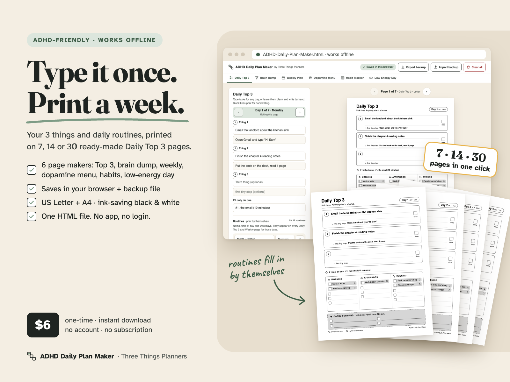
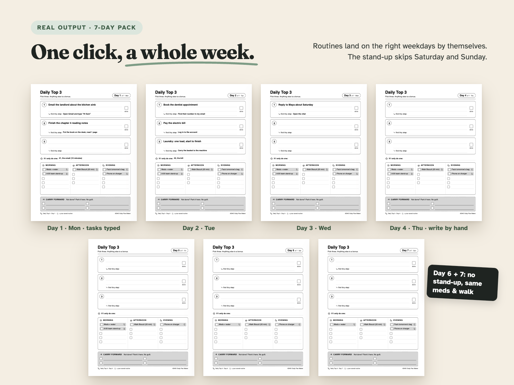
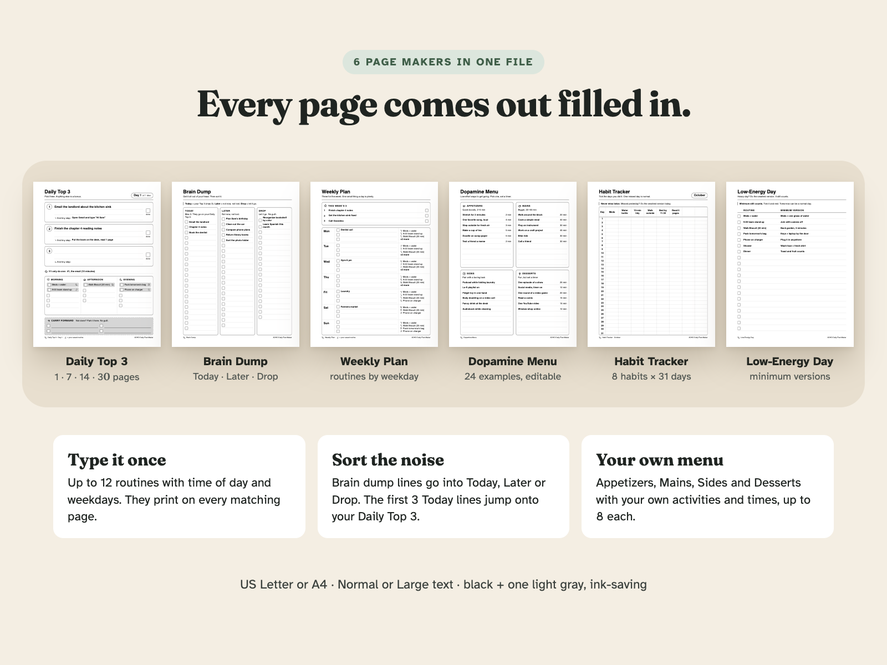
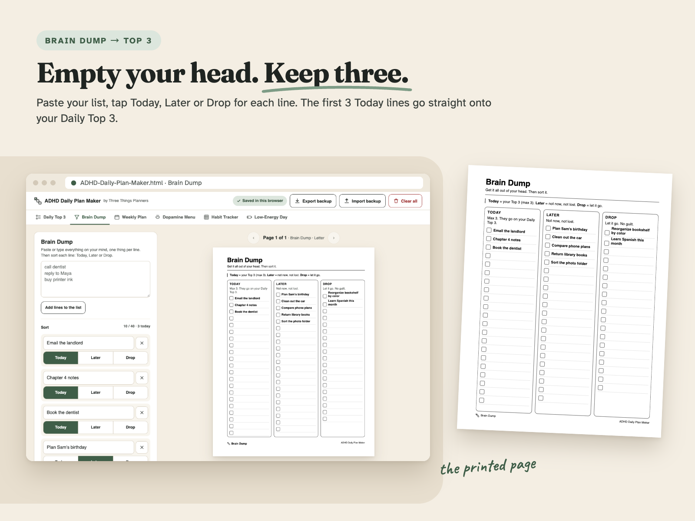
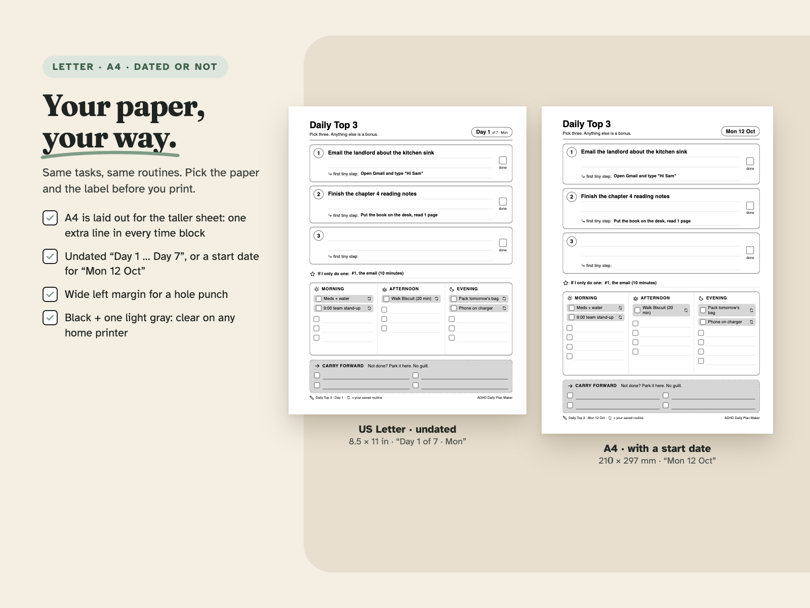
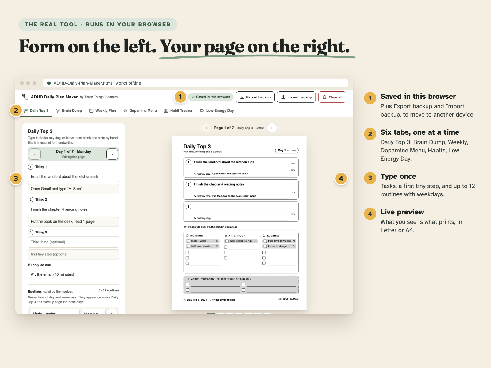
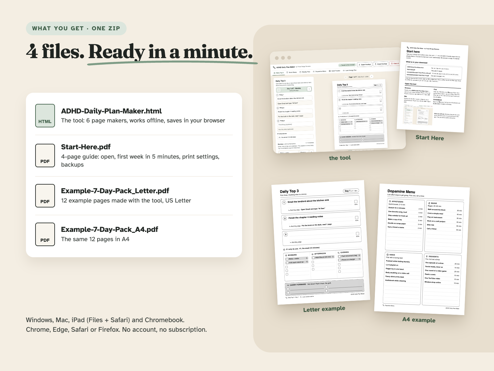

One HTML file for your browser. Works offline. Prints US Letter or A4.
Type it once, print a week. Save your routines once and print 1, 7, 14 or 30 ADHD-friendly Daily Top 3 pages that come out already filled in. No account, no subscription.
From Three Things Planners, the planner imprint of Hustle Studio.

$6.00 USD. $6 one-time payment, instant download. No subscription.
Buy now: $6 Try the free 1-page version first14-day refund, no questions asked. Not right for you? Email chenphien@gmail.com (Three Things Planners support) within 14 days of purchase and you get a full refund. You don't need to give a reason (see Terms). The refund goes back to your original payment method.
Satisfaction guarantee. If it doesn't work on your device, email us for a full refund. If the tool doesn't fit how you plan, or it won't open or print on your device, you get your money back. Tell us your browser and printer and we'll also try to help.
Secure checkout. Waffo Pancake is our merchant of record: it takes the payment, handles sales tax and sends your receipt. We never see your card details.
Try before you buy, free, no email: the free ADHD Daily Plan Generator runs right here on our site. It makes one Daily Top 3 page (Letter or A4, Normal or Large text) that you can print or keep as a free sample PDF ("Print / Save as PDF"), so you can test the layout on your own printer before paying.
| Free generator (website) | Full Plan Maker ($6) | |
|---|---|---|
| Daily Top 3 page | 1 page at a time | 1, 7, 14 or 30 pages in one print |
| Saved routines (printed on the right weekdays) | No, nothing is saved | Up to 12, saved in your browser |
| Other page makers | None | Brain Dump → Top 3, Weekly Plan, Dopamine Menu, Habit Tracker, Low-Energy Day |
| Dated pages ("Mon 12 Oct") | Type a day by hand | Pick a start date, dates fill in |
| Works offline, Export / Import backup | No (web page) | Yes (one HTML file) |
| Start Here guide + 2 example packs | No | Yes |
What you get (4 files; your download page opens right after payment, with a download link for each file):
ADHD-Daily-Plan-Maker.html: the tool. 6 page makers, batch print 1 / 7 / 14 / 30 Daily Top 3 pages, up to 12 routines, Letter / A4, Normal / Large, Export / Import backupStart-Here.pdf: 4-page US Letter guide (open it on Windows, Mac, iPad, Chromebook; first week in 5 minutes; print settings; backups; quick fixes; license; refunds)examples/Example-7-Day-Pack_Letter.pdf: 12 example pages made with the tool, US Letterexamples/Example-7-Day-Pack_A4.pdf: the same 12 pages in A4These images are made from the real tool and the real example PDFs in the download. The shop is new, so there are no reviews or buyer photos yet, and we won't invent any. That's why you can see the full pages here, watch the screen recording and try the free 1-page version first.






53 seconds of the real tool: typing tasks, paging through Day 1 to Day 3, switching to 30 pages and A4, sending a brain dump line to the Daily Top 3, the Dopamine Menu.
Blank planner pages ask you to rewrite the same things every morning: meds, the 9:00 stand-up, walking the dog, phone on the charger. The ADHD Daily Plan Maker does that part for you.
You open one HTML file in your browser, type your routines once and pick the weekdays they happen. Then choose 1, 7, 14 or 30 pages and press Print. Every Daily Top 3 page comes out with your routines already in the right Morning, Afternoon or Evening block, only on the days you picked. Type up to three things for any day with a first tiny step, or leave the boxes blank and write by hand.
Each Daily Top 3 page has three task boxes with a "first tiny step" line and a done box, an "If I only do one" line, Morning / Afternoon / Evening blocks, and a Carry forward strip ("Not done? Park it here. No guilt.").
Five more page makers sit in the same file:
Everything you type is saved in your own browser on your own device. Nothing is uploaded, and there is no login. Because the save lives in one browser, the tool has Export backup and Import backup buttons, and the Start Here guide explains exactly when to use them (including on iPad, where Safari may not keep the save for a file opened from the Files app).
Pages print in US Letter or A4, in Normal or Large text, in black and one light gray. Each generated page fits on exactly one sheet. This is an ADHD-friendly paper planning tool. It is not medical advice.
| File | What it is | Pages |
|---|---|---|
ADHD-Daily-Plan-Maker.html | The tool: 6 page makers, batch print 1 / 7 / 14 / 30 Daily Top 3 pages, up to 12 routines, Letter / A4, Normal / Large, Export / Import backup | – |
Start-Here.pdf | US Letter guide: opening it on Windows, Mac, iPad and Chromebook, your first week in 5 minutes, print settings for Chrome, Edge, Safari and Firefox, backups, quick fixes, license, refunds | 4 |
examples/Example-7-Day-Pack_Letter.pdf | Example pages made with the tool, US Letter: Daily Top 3 × 7, Weekly Plan, Dopamine Menu, Habit Tracker, Low-Energy Day, Brain Dump | 12 |
examples/Example-7-Day-Pack_A4.pdf | The same 12 pages in A4 | 12 |
Do I need to install anything or make an account?
No. Download ADHD-Daily-Plan-Maker.html and double-click it. It opens in Chrome, Edge, Safari or Firefox and works without internet.
Where is my data saved? Can I use it on another device?
In your browser's local storage on that device, and nowhere else. To move it, tap Export backup, then Import backup on the other browser or device. On iPad, Safari may not keep the save for a file opened from the Files app, so Start Here shows how to use the backup file there.
Does it work on iPad?
Yes, open the file from the Files app in Safari and print or Save as PDF. The pages are made for paper, not for writing in GoodNotes or Notability with links.
Will the pages have dates on them?
Your choice. Leave the start date empty for undated pages ("Day 1", "Day 2"…), or enter a start date to print the weekday and date, like "Mon 12 Oct".
Can I try it first?
Yes. The free ADHD Daily Plan Generator makes a single Daily Top 3 page with no saving. The full version adds saved routines, 7 to 30 page packs and the other five page makers.
Will the tool keep working? Who maintains it?
It is a single self-contained HTML file with no server, account or online service behind it, so it keeps working on your computer even offline. Three Things Planners is the planner imprint of Hustle Studio, a small new shop with its own website. Questions and bug reports: email chenphien@gmail.com.
What if it does not work for me?
Email chenphien@gmail.com within 14 days of purchase for a full refund. Questions and bug reports go to the same address.
An ADHD-friendly paper planning tool, not medical advice. Personal use.
$6.00 USD. $6 one-time payment, instant download.
Buy now: $6 Try the free 1-page versionSatisfaction guarantee: 14-day full refund, no reason needed (email chenphien@gmail.com). Secure checkout by Waffo Pancake, our merchant of record (payment, tax and receipt). You get 4 files: the HTML tool, Start-Here.pdf and two 12-page example PDFs.